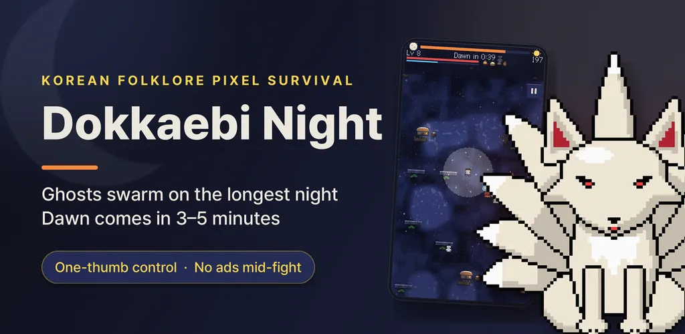
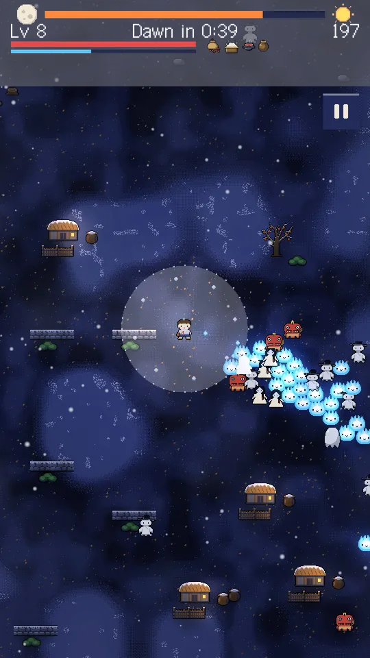
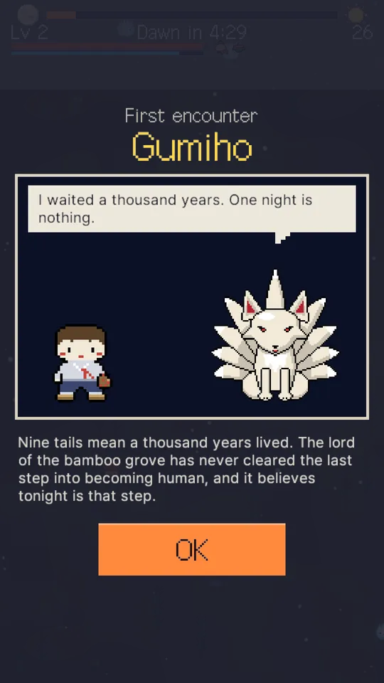
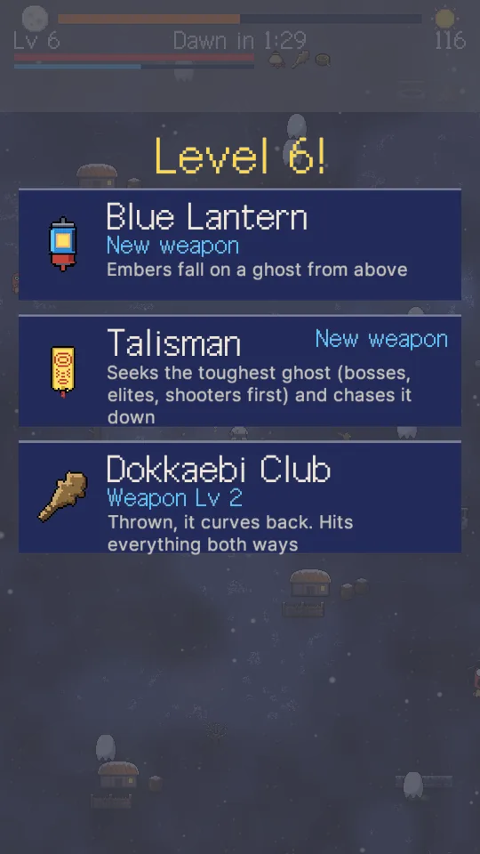
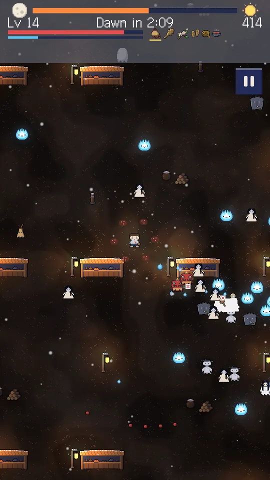
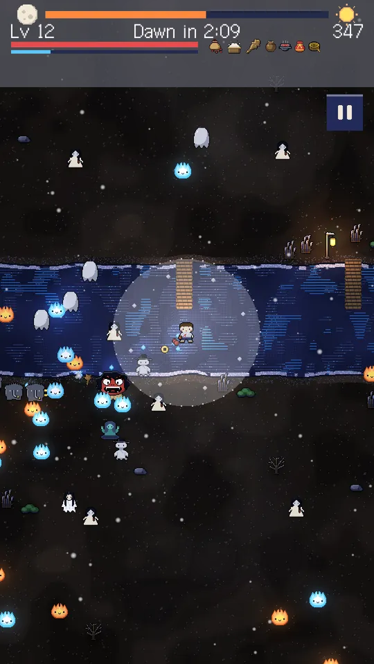
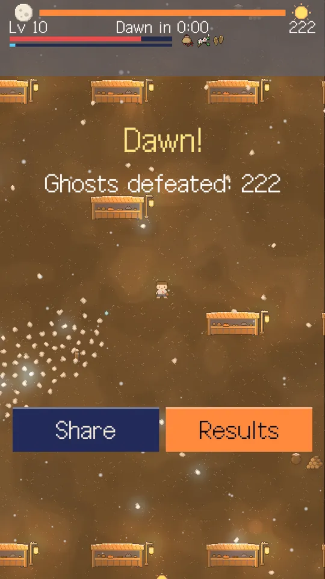

Ghost Survival: Dokkaebi Night
Korean ghost survival game, offline. Dokkaebi swarm at night, survive till dawn.







About this app
The longest night of the year — the gate to the ghost world opens
A wave of ghosts and dokkaebi from Korean folklore descends on the village, and all you've got is a handful of red beans. Move with one thumb, auto-attack does the rest. Pick 1 of 3 cards on every level-up and build your own run. Survive just 3-5 minutes until the rooster crows at dawn and you win. No more 30-minute runs that crash and vanish — Dokkaebi Night runs are short, and if you leave mid-run, you pick up right where you left off.
One-thumb controls — your first level-up in moments
- A floating joystick for movement only; attacks fire automatically
- 12 weapons (red beans, salt, talismans, bells, a dokkaebi club and more) + 14 relics, with new ones unlocked as you play, 1-of-3 cards on every level-up
- A 0.35s lock on new touches only, so a stray tap never wastes a card
A pixel-art survival roguelite that ends in 3-5 minutes
- 4 nights (village gate, bamboo grove, market, ferry crossing), each with its own ghosts and scenery
- Up to 350 ghosts swarming the screen at once, cut through in a blaze of effects
- Leave for a call or go home mid-run — Resume picks you back up in the exact same spot
A codex that grows deeper the more you play
- Every ghost you defeat is logged in the codex; special ghosts get a one-panel comic on first encounter
- Each run carves a permanent weakness into the ghost you fought hardest — hit it harder next time
- Permanent upgrades at the guest room using coins, and each character starts differently
A clean run — nothing gets siphoned off you
- No in-app purchases, no gacha, no energy system — coins are a free currency earned only by playing
- Zero ads during the fight itself
- Rewarded ads (revive on defeat, double coins on results) play only when you choose to tap them
- Banner and interstitial ads appear only on menu screens and the "Sortie" tap, with a one-line ad notice at the bottom of the home screen
14 languages including Korean and English, fully offline — no sign-up, no server. Survive the longest night, until the rooster crows at dawn.
> The ghosts and dokkaebi in this game are original characters based on generic names from Korean folklore. The talismans and rituals shown are fictional symbols, unrelated to any real religion or shamanic practice. Recommended for ages 13 and up.
Android · free with ads · Developer: RealTunaLove · Store listing in 17 languages
Background story: why I built it